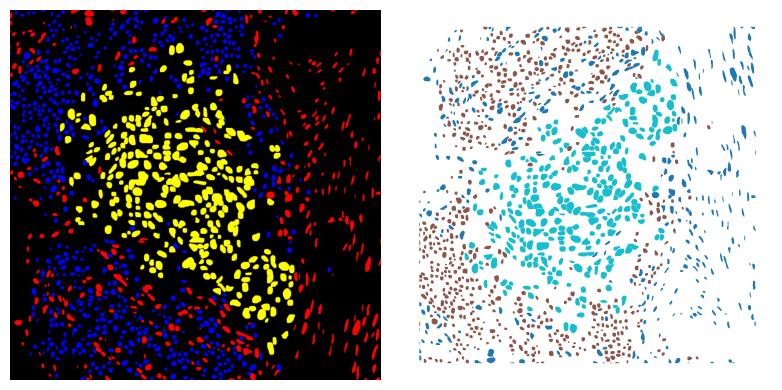

gdf2sem
Converts a GeoDataFrame to a semantic segmentation raster mask.
Parameters:
| Name | Type | Description | Default |
|---|---|---|---|
gdf
|
GeoDataFrame
|
GeoDataFrame with a "class_name" column. |
required |
xoff
|
int
|
X offset. This is used to translate the geometries in the GeoDataFrame to burn the geometries in correctly to the raster mask. |
0
|
yoff
|
int
|
Y offset. This is used to translate the geometries in the GeoDataFrame to burn the geometries in correctly to the raster mask. |
0
|
class_dict
|
Dict[str, int], default=None
|
Dictionary mapping class names to integers. e.g. {"neoplastic":1, "immune":2} If None, the classes will be mapped to integers in the order they appear in the GeoDataFrame. |
None
|
width
|
int
|
Width of the output. This should match with the underlying image width. If None, the width will be calculated from the input gdf. |
None
|
height
|
int
|
Height of the output. This should match with the underlying image height. If None, the height will be calculated from the input gdf. |
None
|
Returns:
| Type | Description |
|---|---|
ndarray
|
np.ndarray: Semantic segmentation mask of the input gdf. |
Examples:
>>> from histolytics.data import hgsc_cancer_nuclei
>>> from histolytics.utils.raster import gdf2sem
>>> import matplotlib.pyplot as plt
>>> from skimage.measure import label
>>> from skimage.color import label2rgb
>>>
>>> nuc = hgsc_cancer_nuclei()
>>> # Convert the GeoDataFrame to an instance segmentation raster
>>> nuc_raster = gdf2sem(nuc, xoff=0, yoff=0, width=1500, height=1500)
>>> # Visualize the semantic segmentation raster and the GeoDataFrame
>>> fig, ax = plt.subplots(1, 2, figsize=(8, 4))
>>> ax[0].imshow(label2rgb(nuc_raster, bg_label=0))
>>> ax[0].set_axis_off()
>>> nuc.plot(column="class_name", ax=ax[1])
>>> ax[1].set_axis_off()
>>> fig.tight_layout()

Source code in src/histolytics/utils/raster.py
303 304 305 306 307 308 309 310 311 312 313 314 315 316 317 318 319 320 321 322 323 324 325 326 327 328 329 330 331 332 333 334 335 336 337 338 339 340 341 342 343 344 345 346 347 348 349 350 351 352 353 354 355 356 357 358 359 360 361 362 363 364 365 366 367 368 369 370 371 372 373 374 375 376 377 378 379 380 381 382 383 384 385 386 387 388 389 390 391 392 | |